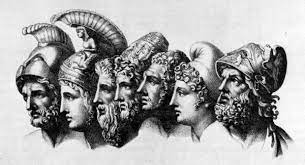

La Ilíada es una epopeya griega atribuida a Homero que narra los eventos durante la Guerra de Troya.
La historia se centra en la cólera de Aquiles, uno de los héroes griegos, y presenta una amplia variedad de personajes mitológicos.
La obra es conocida por su estilo poético y su exploración de temas como la gloria, el honor y la tragedia.
Ha influido significativamente en la literatura occidental y sigue siendo una pieza clave en la cultura clásica.

Personajes Destacados
- Aquiles: El héroe griego central, conocido por su valentía y cólera.
- Héctor: Príncipe troyano y valiente defensor de su ciudad.
- Odiseo: Astuto guerrero griego, famoso por su ingenio.
- Páris: Príncipe troyano y causante del conflicto al llevarse a Helena.
- Atenea: Diosa griega que apoya a los héroes griegos durante la guerra.
- Agamenón: Líder de los griegos en la Guerra de Troya.
La Ilíada es una obra fundamental para entender la mitología griega y ha inspirado numerosas adaptaciones en diversas formas de arte.
Contexto Histórico
Descubre más sobre el contexto histórico de la Guerra de Troya y los eventos que llevaron a la creación de La Ilíada.
Análisis Literario
Profundiza en el estilo poético y los temas literarios presentes en La Ilíada.
Adaptaciones Modernas
Explora las fascinantes adaptaciones modernas de La Ilíada en cine, literatura, teatro y más.
Recursos Adicionales
Encuentra enlaces a libros, artículos y otros recursos relacionados con La Ilíada para profundizar en tu conocimiento.
Personajes Destacados
| Personaje |
Descripción |
Más información |
| Aquiles |
El héroe griego central, conocido por su valentía y cólera. |
Wikipedia |
| Hector |
Príncipe troyano y valiente defensor de su ciudad. |
Wikipedia |